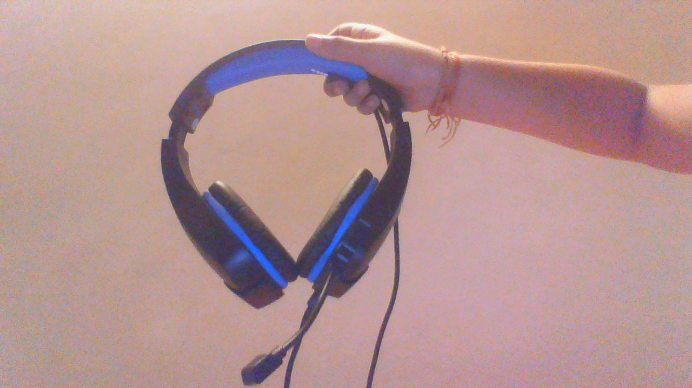

Google Lens
VS
Mobile net
Developed by: 💜Damini the Coder💜
Let's find out which Image identification service is more accurate.
This is a bag
Result on Google Lens:
Result on Mobilenet:
These are Headphones

Result on Google Lens:
Result on Mobilenet:
This is a wireless computer mouse.
Result on Google Lens:
Result on Mobilenet:
This is a pot of artificial flowers.
Result on Google Lens:
Result on Mobilenet: